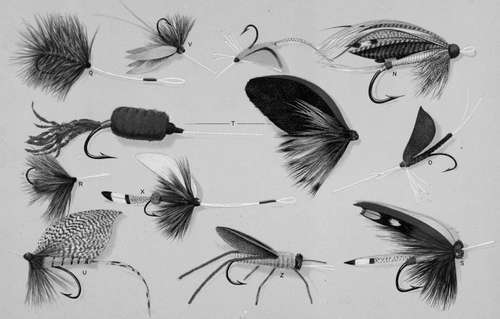
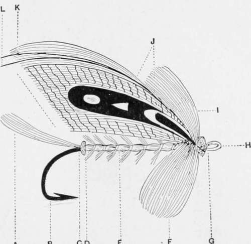

Fly-Fishing. Part 3
Description
This section is from the book "American Game Fishes", by W. A. Perry. Also available from Amazon: American Game Fishes: Their Habits, Habitat, and Peculiarities; How, When, and Where to Angle for Them.
Fly-Fishing. Part 3
I.-Quill-bodied Gray Dun.-The quill-body is from the feather of the moor or water hen, and is possessed of a lighter and darker strip each side so that when wound on it successfully imitates the ringed markings of the actual insect. The wings are the dun under-feather of the mallard or wild-duck's wing, and the hackle is a blue dun from a rare breed of chickens I managed to secure one day when I was in luck.
K.-Parmacheene Belle.-This handsome fly is my first example of the compound wing. With care the red ibis and white goose feather can be "married" together and turned as one feather. The hackle is white first and then red; body, yellow seal's fur ribbed with broad silver tinsel; and ending with a tag of peacock tail, two slips of feathers-ibis and white goose or swan.
L.-Abbey.-This well-known fly is thus dressed: wing, teal-breast; body, cardinal silk; tag, peacock herl; tail, fibers from golden pheasant tippet; hackle, brown.
M.-Alexandra.-Thistly is formed as follows, and is an instance of a bunch of separate fibers forming the wings. Wing of peacock feathers; tail of peacock fibers; body, white silk ribbed silver tinsel; tag, red silk; hackle, white. This is the invention of an English Trout-breeder and sportsman, the late Col. Gerald Goodlake. He used it with great success in taking the large American Brook Trout he bred for his fishery. By the way, these fish grew to six and seven pounds weight, and then disappeared - probably down-stream to the ocean.
Silver Doctor-Salmon Fly
This fly is a superb creation, and as productive of sport as it is handsome to look at. (Before describing it, however, it is necessary to make the reader acquainted with the technical names of the different parts of a fly. As these are more numerous in the Salmon-fly, I give in fig. 28, the diagram of a representative one-the "Greenwich fancy," which will serve the double purpose of enlightening the tyro as to the parts of both Trout and Salmon fly-so far at least as the technology of both is concerned. In the Trout-fly there are necessarily less parts, but the names of those that are present are the same as on the Salmon-fly. The "Greenwich fancy" (fig 28) is thus described: A, tail; B, iron or hook; C, tag; D, butt; E, body; F, throat-hackle (also extending down the body;; G, head; H, loop or gut snell; I, cheeks; J, outer wing; K (topping of golden pheasant), over-wing; L, feeders or horns; M, wing).
Fig. 28.
'Silver Doctor,' is thus described: Tag, silver tinsel and yellow silk. Tail, golden pheasant topping (feather from the crest or top of the head of the bird); butt, dark scarlet wool; body, sliver tinsel, flat-ribbed in a wide coil with silver wire; throat-hackle, of guinea-fowl feather and white hackle dyed blue; wings, connected strands of golden pheasant-hackle (or tippet, as it is termed); wood-duck, pintail duck, golden-pheasant tail, swan (a goose), dyed light yellow and light blue; strips, of mallard and bustard, and the over-wing a topping (golden pheasant crest); horns, blue macaw (fibers from the quill-feather); head, dark-scarlet wool.
O.-Dark Dun (Ephemeridce).-This fly is made of a new material, with the exception of the legs, which are of horsehair, of which the interior of the body is also formed. This material is the membrane found on the under surface of the large silvery scales of the Tarpon (Silver King, - specific name, mo galops thrissoidcs), found in southern waters. It is the toughest membrane in nature, and has several peculiarly valuable properties. First, it is capable of being procured so thin as to be finer than the insect's wing itself. It takes a dye readily, and, when both out and in the water, stands erect, as shown in the illustration. When dry it is rather stiff and quill-like, but unlike quill it softens right down when wet, becoming more pliant than feather, and yet retaining- in fact increasing-its toughness. Both the body and wing of this fly are of this material; the legs are of hair, and I need scarcely say it is almost indestructible. No wonder the tackle-makers do not care to make these flies-and it is a fact that they are slow to take them up.
P.-Yellow May Fly.-This beautiful and favorite fly is found very plentifully on northern streams, during summer and the "counterfeit presentment" on plate 2 is an exact imitation. The wings are stained Tarpon membrane, the legs are horse-hair, and the body is of horse-hair wound round with horse-hair. The tail consists of two fibers of the mallard breast-feather. I leave it to the unprejudiced reader to say if a nearer imitation of an actual insect is possible.
Q and R are two forms of the favorite "brown hackle." Q is the palmer hackle and R the brown hackle.
S.-Grasshopper-Fly.-Why this is so called I do not know. Orvis & Co. (tackle-makers), figure it in their elaborate catalogue, "Fishing With the Fly," but it certainly resembles no grasshopper of this sublunary sphere. All the same, it is a good Trout-fly, and with it I have taken some big fish. It is thus dressed: Tag, silver tinsel and green silk; tail, yellow swan and wood-duck (the black-and-white-tipped feather); body, brown silk; hackle, cardinal; wing jungle-cock feather, with over-wing of red ibis and yellow swan (dyed); head, peacock herl.
T.-Adjustable Bass or Lake Trout Fly.-There is a peculiarity about this fly which demands close attention. It is made in two sections, on a system new to fly-makers. The body and tail are formed on the hook, and a thin tube of brass, or even quill, is inserted, after the fashion of the female ferrule of a rod. The hackle and wings are tied securely on a pin, which, when inserted into the aforesaid tube, fits snugly and completes the tout ensemble. The hook-part, of course, is securely attached to the snell, and the adjustable wings and legs do not throw out, but are naturally tightened by the water.
Continue to: